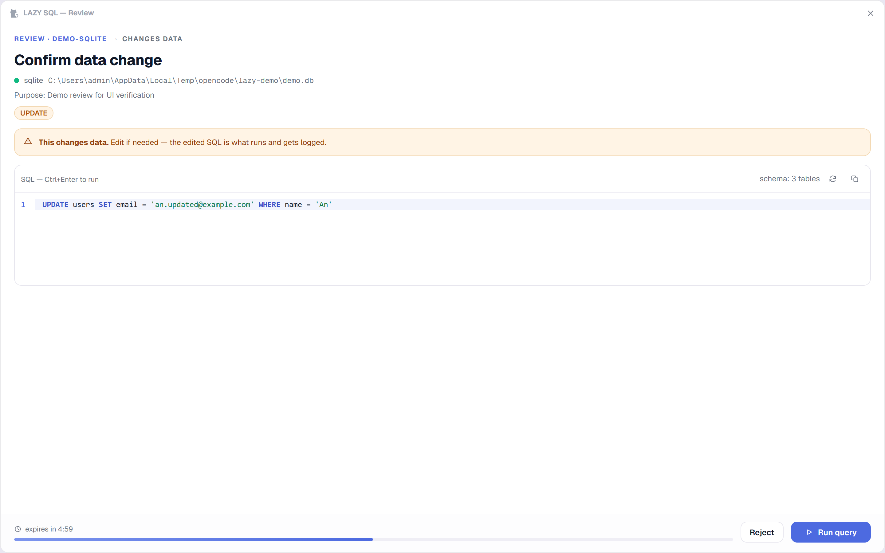
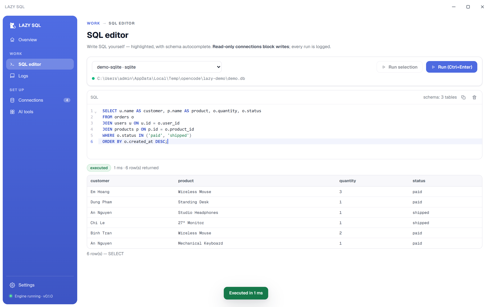
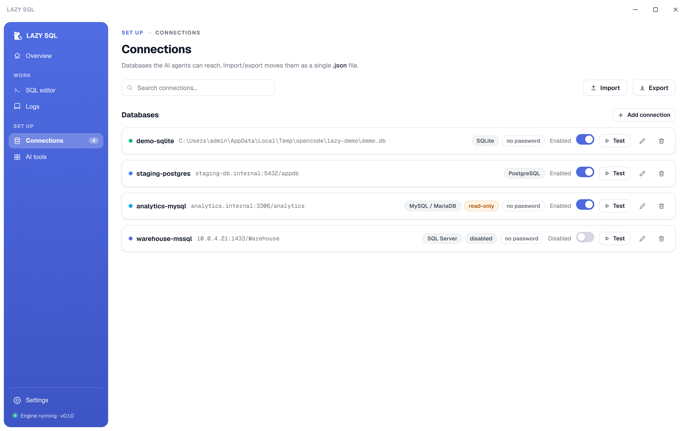
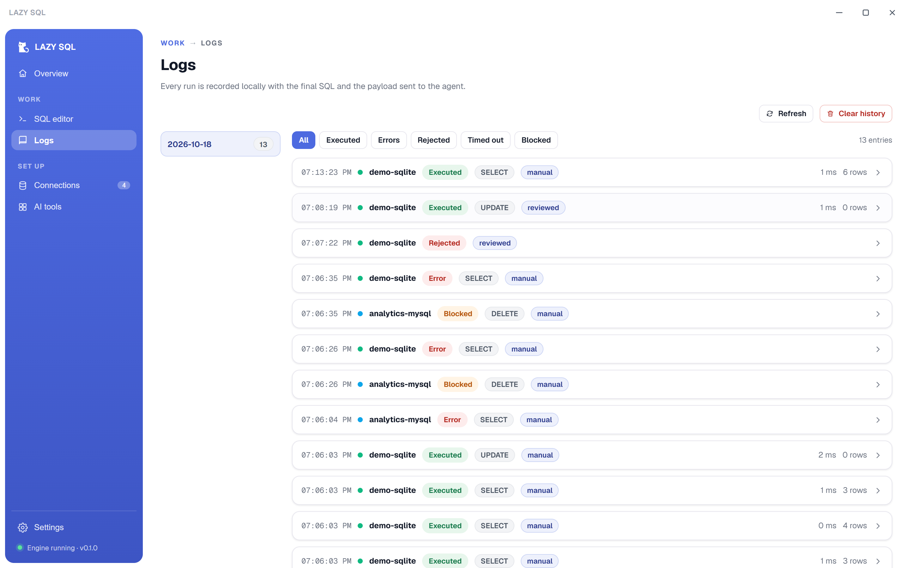
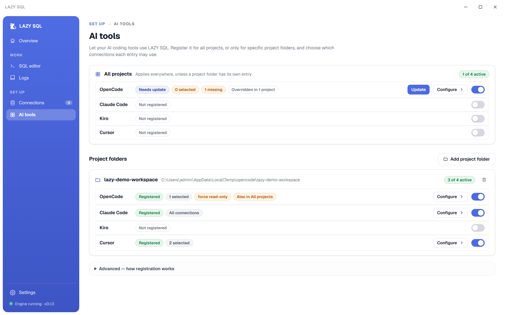
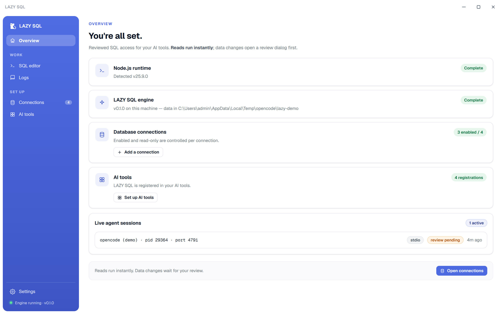
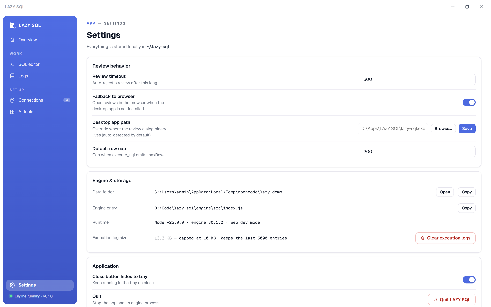

LAZY SQL is a local MCP server for OpenCode, Claude Code, Kiro and Cursor. Read-only queries run instantly. Every write, schema change or unclear statement opens a review dialog first — nothing touches your data until you approve it.

Everything an AI session needs to query safely, and everything you need to stay in control of it.
The engine spawns a dedicated frameless window — always-on-top, docked to the screen edge — with an editable SQL editor, schema-aware autocomplete, danger warnings and a countdown. The edited SQL is what executes and gets logged.
Pick a connection and write SQL yourself with syntax highlighting and schema autocomplete. Read-only connections block writes here too, and every manual run lands in the execution log.
Every connection has an enabled flag for agent visibility and a read-only flag that blocks writes server-side and at the driver session level. Lock an entire workspace read-only with one env var.
Register or remove LAZY SQL for OpenCode, Claude Code, Kiro and Cursor — globally or per project folder — and choose exactly which connections each scope may use. Config edits are minimal, atomic and backed up once.
Read queries, approved writes (final SQL + params), rejections, timeouts and blocks are all written to a local log with the exact payload returned to the agent. Browse by date, filter by status.
All connections travel as a single .json file. Passwords are opt-in only — ${'${ENV_VAR}'} placeholders preferred. Conflict handling on import: skip, overwrite or keep both.
The MCP stdio server and the desktop app share a single Node engine. Agents talk stdio; the dialog talks to the same engine over a token-guarded localhost API.
OpenCode, Claude Code, Kiro or Cursor calls execute_sql over stdio MCP.
Classifies the statement. Reads run instantly. Writes wait for a decision.
Spawned per review — edit the SQL, run it, or reject. Rejections close the dialog and tell the agent.
execute_sql with SQL, params and an optional purpose note.
Read-only runs need nothing. Writes open the dialog: approve (possibly edited), or reject. Expired reviews auto-reject.
The final SQL, params, duration and the exact result payload sent back to the agent — locally, per day.
The main window is for setup and history — connections, SQL editor, logs, AI tool registrations and settings. Reviews never interrupt it; they belong to the agent session that asked.






Install the app, add a connection, then flip the toggle for your AI tool. The engine ships inside the app — Node.js ≥ 22.5 is the only requirement.
Windows: per-user install, no admin rights — an MSI for managed deployments is on the releases page. macOS: unsigned build — on first launch right-click the app → Open (or xattr -d com.apple.quarantine "/Applications/LAZY SQL.app"). Node.js ≥ 22.5 required on both platforms.
A review dialog is the human approval step for every data or schema change — and read-only connections are blocked before any dialog opens.
INSERT / UPDATE / DELETE / DDL / CALL and anything unclear open the dialog. The edited SQL is what executes and what gets logged.
The API binds 127.0.0.1 and every call requires a per-session token. CORS is limited to local origins. No cloud, no telemetry.
Passwords are stored locally with 0600 permissions (or resolved from ${'${ENV_VAR}'}). The API never returns them and errors are scrubbed.
Each project folder gets its own allow-list of connections. A list with no usable entry allows nothing — malformed config never widens access.